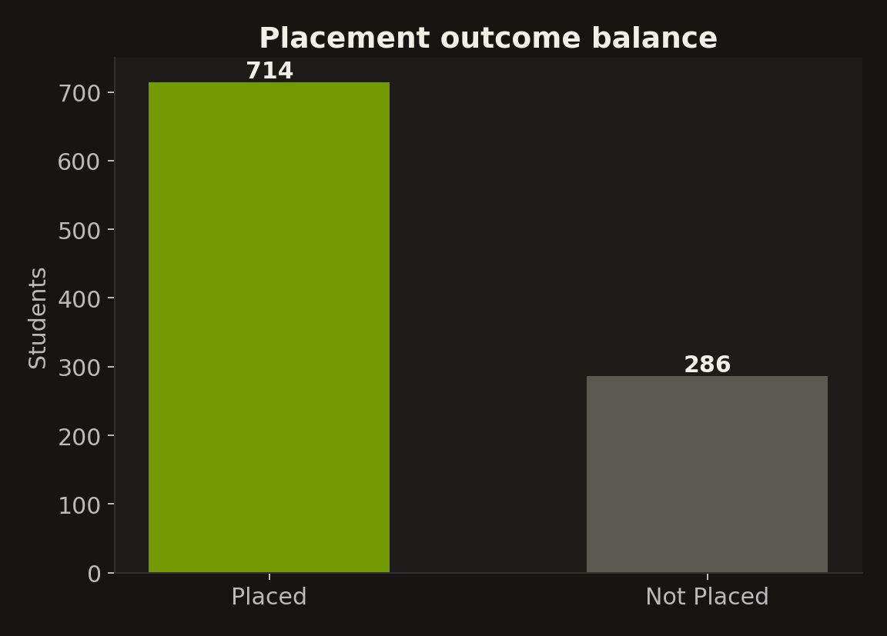
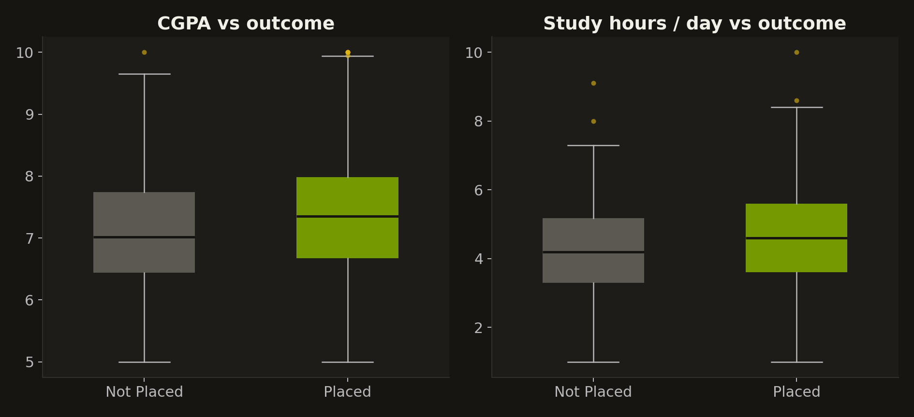
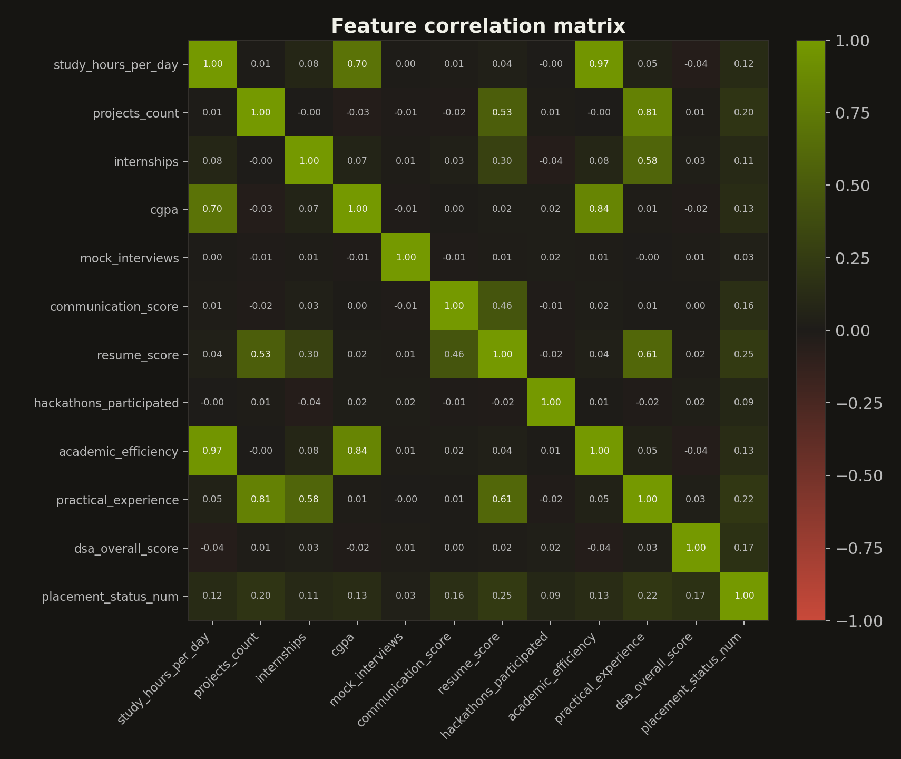
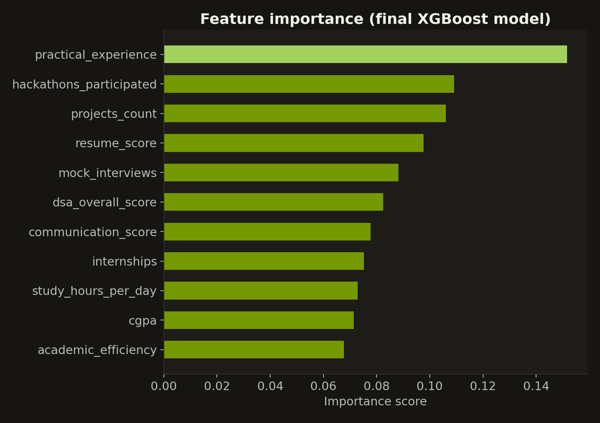
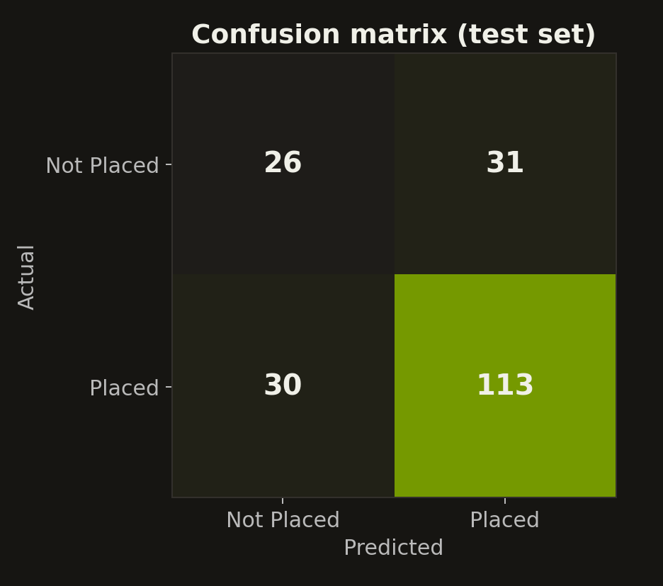

The classes are imbalanced
Of the 1,000 students, 714 were placed and 286 were not placed, so about 71% of the data belongs to one class.
A model trained on this directly can score well by mostly predicting "Placed", so we balanced the training split with SMOTE to make it take the "Not Placed" class seriously.

CGPA and study hours overlap heavily
Placed students have a slightly higher average CGPA (7.37 against 7.08) and study slightly more per day (4.64 hours against 4.26).
The boxes overlap a lot, so neither CGPA nor study time alone is a strong signal of placement.

Resume score and experience relate most to placement
Resume score has the strongest correlation with placement (0.25), followed by practical_experience (0.22) and projects_count (0.20). Even the best single feature is only weakly correlated with the outcome.
The engineered academic_efficiency is almost the same as study hours (0.97) and strongly tied to CGPA (0.84). Study hours and CGPA are themselves correlated at 0.70.

What the final model relies on
practical_experience is the most important feature at about 0.15, followed by hackathons_participated and projects_count at about 0.11 each.
CGPA and academic_efficiency are among the least important features, so hands-on experience matters more to the model than raw academic scores.

How well the final model performs
On the 200 test students the model classified 139 correctly, an accuracy of 69.5%. It found 113 of the 143 placed students and 26 of the 57 not-placed students.
Detection of the "Not Placed" class is balanced against the "Placed" class (recall of about 0.46 and 0.79), which is the effect of SMOTE. The plain Random Forest we tried first reached 67.5% accuracy.
Anomalies, observations and patterns
- Anomaly: CGPA and study hours barely separate placed from not-placed students, even though they are the usual first measures of preparation. The groups overlap heavily, so these alone are poor predictors.
- Observation: the final XGBoost model with SMOTE reaches 69.5% accuracy on the test set, and it finds 26 of 57 not-placed students compared with 15 of 57 for the Random Forest baseline.
- Pattern: hands-on experience (projects, internships, hackathons) and resume quality carry more signal than academic scores, and the strongest single correlation with placement is only 0.25, so placement depends on many factors together.